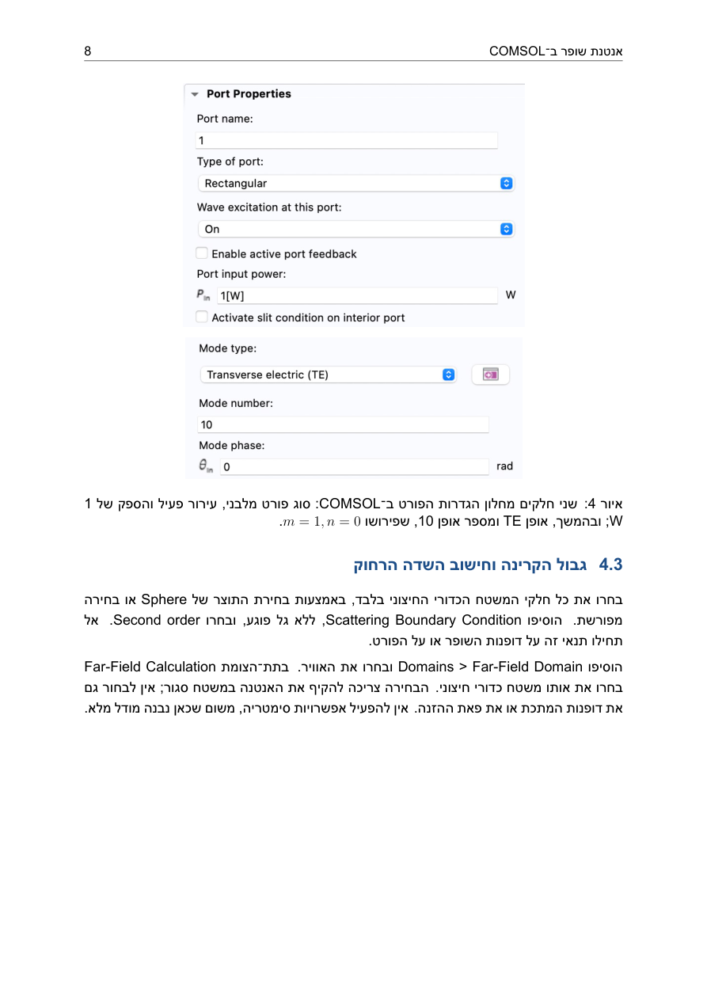
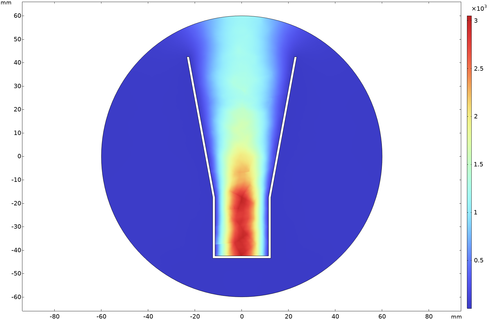
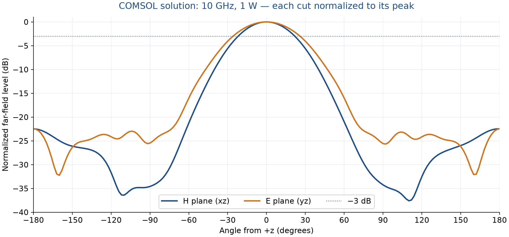

PDF · 18 עמודים
אנטנת שופר ב־COMSOL
הוראות הבנייה וההרצה, צילומי מסך, תוצאות הסימולציה, בדיקות הדיוק ותרגילים להמשך.
פתיחת המדריך שמירת PDF למחשבהדרכת המשך לקורס COMSOL בעברית
בניית המודל, הגדרת ההזנה וחישוב הקרינה.
מדריך מעשי מאת ד״ר נצח בלל לסימולציה של אנטנת שופר פירמידלית בתדר 10 GHz, בהזנת מוליך גלים מלבני WR90. ההדרכה מלווה את העבודה מהגדרת המידות ותנאי השפה ועד להצגת השדה החשמלי, מקדם ההחזרה ועקום הקרינה.

ההדרכה מיועדת למי שכבר מכירים את העבודה הבסיסית עם פרמטרים, גאומטריה, בחירות ורשת ב־COMSOL. לפני תחילת התרגול אפשר ללמוד את היסודות ב־קורס COMSOL בעברית למתחילים.
המודל נבנה ב־COMSOL Multiphysics 6.4.0.378, בממשק Electromagnetic Waves, Frequency Domain. לפתיחתו ולהרצתו נדרש רישיון הכולל את RF Module. בחוברת מפורטות גם דרישות הזיכרון שנמדדו בהרצות ההדגמה.
הזנת מידות, בניית מוליך גלים ומקטע מתרחב, יצירת מעטפת המתכת והגדרת האוויר שבתוך האנטנה ומחוצה לה.
בחירת פאת פורט ההזנה, אופן TE10 והספק העירור. הגדרת דופנות כמוליך מושלם, גבול קרינה ומשטח סגור לחישוב השדה הרחוק.
בחירת גודל האלמנטים לפי אורך הגל, יצירת רשת טטראדרית והרצה בתדר יחיד.
הערכת S11, הצגת גודל השדה החשמלי בחתך מרכזי וחישוב חתכי הקרינה במישורי E ו־H.
השוואת רשתות ותחומי אוויר, בדיקת מאזן ההספק ושינוי התדר, מידות הפתח והספק ההזנה.


החוברת משווה שלוש ריצות של אותו שופר. האלומה הראשית יציבה יחסית, אך ערך ההחזרה משתנה עם גודל תחום האוויר, ונשארת שארית במאזן ההספק. ההבדלים והצעדים לשיפור הדיוק מפורטים במדריך. הדוגמה מיועדת ללימוד תהליך המידול ולתרגול בדיקות נומריות.
PDF · 18 עמודים
הוראות הבנייה וההרצה, צילומי מסך, תוצאות הסימולציה, בדיקות הדיוק ותרגילים להמשך.
פתיחת המדריך שמירת PDF למחשבMPH · COMSOL 6.4
מודל עצמאי שנבנה עבור ההדרכה, עם פתרון שמור, חתך שדה וחתכי קרינה. נדרשים COMSOL ו־RF Module.
הורדת מודל COMSOL